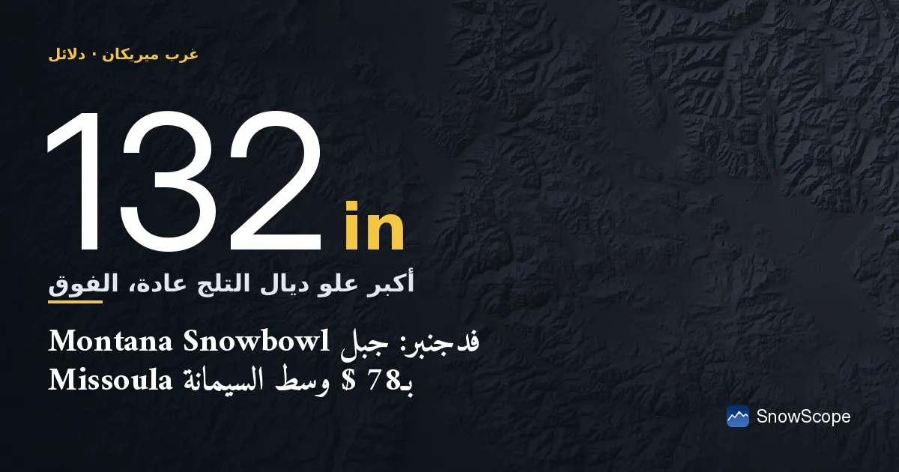

Montana Snowbowl فدجنبر: جبل Missoula بـ78 $ وسط السيمانة
Montana Snowbowl مقرب من Missoula مع أسعار صحيحة: 78 دولار لبيليه يوم كامل فـ 2026/27. التضاريس الحادة والبيستات القصيرة جذابة للمحليين. التلج جديد يوصل بشكل غير متساوي على البيست—الفوقانية تبني غطاء موثوق بـ نص ديسمبر، بس القاع يبقى رقيق فـ أول الشتاء.
شوف توقعات التلج مباشرة ديال Montana Snowbowl فالتطبيق ديال SnowScopeالعلو ديال التلج، التنبيهات والخريطة 3D، فابور.
البيست والبيليه
Snowbowl تمتد من 4,990 قدم (1,522 م) فـ القاع لـ 7,530 قدم (2,296 م) فـ الفوقانية، فيها 6 مصاعد وتقريبا 27 ميل (43 كم) ديال البيستات. هاد المحطة ديال الركوب والتزلج: ما فيهاش قرية، ما فيهاش حاجات زايدة، بس التزلج الحاد قرب المدينة.
البيليات ديال اليوم الكامل تكلف 78 دولار فـ أيام الشغل و 85 دولار فـ السبت والأحد والعطل. البيليه ديال ما بعد الزوال من 12:30 تكلف 72 دولار فـ أيام الشغل و 77 دولار فـ السبت والأحد. البطاقة ديال Indy تغطي المحطة: بطاقة Base Pass (419 دولار) أو Indy+ Pass (469 دولار) فيهم يومين لكل عضو.

فين التلج أسمك فـ ديسمبر
بـ نص ديسمبر، الفوقانية ديال Snowbowl تحتاز 37 بوصة (93 سم) عادة، مع 91% ديال الشتوات اللي فاتو فوق 20 بوصة (50 سم). الوسط (6,260 قدم / 1,909 م) متوسطه 30 بوصة (76 سم)، مع 83% ديال الشتوات اللي فاتو تجاوزت العلامة ديال التلج الديابة. القاع تأخر بزاف: 16 بوصة (40 سم) فقط عادي، و 28% بس ديال الشتوات اللي فاتو وصلو لـ 20 بوصة.
الفرق يتسع عبر الشهر. فـ يوم الميلاد، الفوقانية تحتاز عادة 44 بوصة (113 سم) والوسط 37 بوصة (95 سم)، بينما القاع واقف فـ 19 بوصة (49 سم). بـ نهاية السنة، الفرق أحد: الفوقانية فيها 49 بوصة (125 سم)، الوسط 39 بوصة (100 سم)، والقاع فقط 21 بوصة (53 سم).

الموثوقية حسب الأسبوع
أول ديسمبر خطيرة فـ Snowbowl. فـ الأسبوع ديال 30 نونبر لـ 6 ديسمبر، 20% فقط ديال الشتوات اللي فاتو شافو التلج الديابة فـ القاع، مقابل 67% فـ الوسط و 78% فـ الفوقانية. حتى الوسط قاعدة تحت 70% ديال الفرص.
الفرص تتحسن بشكل مستمر. بـ الأسبوع الثاني ديال ديسمبر (7–13 ديسمبر)، الوسط توصل لـ 83% والفوقانية 89%. فـ الأسبوع الثالث (14–20 ديسمبر)، الوسط تبقى فـ 83% والفوقانية 93%. أسبوع الميلاد هو الأكثر موثوقية: 91% ديال الشتوات اللي فاتو جابو التلج الديابة للوسط و 96% للفوقانية.
الشتاء هاد كيفاش قاعد يتشكل
فـ 13 نونبر، SnowScope أطّاع 6 بوصات (16 سم) فـ الفوقانية، 1 بوصة (2 سم) فـ الوسط، والأرض الحرة فـ القاع. الأسبوع اللي جاي فـ التوقعات 3 بوصات (8 سم) زيادة فـ الوسط والفوقانية، و 2 بوصة (6 سم) فـ القاع.
التلج جديد فـ أول السيزون هنا رقيق ومتفرق. الحجار أو الأماكن الفاضية شائعة فـ كل الارتفاعات فـ نونبر. الشتاء اللي فات كان فيه 30 بوصة (76 سم) فـ الوسط فـ 15 ديسمبر، اللي كان ابتداية صحيحة. النص الأول ديال الشتوات اللي فاتو متوسطه 35 بوصة (88 سم) فـ هاد التاريخ، والنص الثاني 28 بوصة (71 سم).
Snowbowl مقابل Bridger Bowl و Lookout Pass
Bridger Bowl قرب Bozeman تكلف 86 دولار أونلاين (99 دولار فـ الشباك) وكان متوسط التلج فـ الوسط 20 بوصة (51 سم) فقط بـ نص ديسمبر عبر الشتوات اللي فاتو، مع نص منهم فوق 20 بوصة. Lookout Pass فـ الغرب على الطريق السريعة 90 تكلف 63 دولار فـ أيام الشغل بـ الحجز وكان فيها 30 بوصة (75 سم)، أسمك من 30 بوصة ديال Snowbowl بس الأسعار أحد فـ باقي السيزون.
فـ ديسمبر، Snowbowl توفر أحسن قيمة بين الثلاثة. التضاريس ديالها أحد من Lookout، وفرص التلج ديالها فـ ديسمبر فـ الوسط أحسن من Bridger. إذا كنت تخطط ليوم الشغل فـ أول ديسمبر وتقدر تتزلج فوق 6,000 قدم، Snowbowl هي الخيار المنطقي.
شنو اللي تتوقعه فـ ديسمبر نحيف
أول 15 شتاء فـ السجل (1980–81 لـ 1994–95) شافو 35 بوصة (88 سم) فـ الوسط فـ 15 ديسمبر عادي، وكل شتاء واحد تجاوز 20 بوصة. أحدث 15 شتاء (2011–12 لـ 2025–26) نزلو لـ 28 بوصة (71 سم) مع 80% فوق العتبة. أنماط التلج تغيرت شوية نحو مواسم أول أنحف.
إذا ديسمبر جاف، اركب البيستات ديال الفوقانية المرسومة وشوف خريطة التلج قبل كل يوم للنظام اللي جاي. الطريق اللي تدخل من فوق حادة وضيقة: شيل سلاسل أو استعمل أطيار الشتاء. قبل ما تهبط من البيست، تشاور مع مركز النشرة ديال الانهيارات ديال Gallatin National Forest.
نصايح للي كيتزلجو
- احجز يوم شغل: 78 دولار يوم كامل أحسن من 85 دولار السبت والأحد والبيليه ديال ما بعد الزوال 72 دولار فقط.
- تجاوز القاع فـ أول ديسمبر؛ قصد الوسط والفوقانية فين التلج وصل بأبكر وطال أكثر.
- الطريق للفوقانية حادة وضيقة: أطيار الشتاء أو السلاسل ضروري، خاصة بعد التلج جديد.
- التلج جديد فـ أول السيزون متفرق وعادة رقيق؛ توقع الحجار أو الأماكن الفاضية فـ القاع عبر نونبر.
- قبل ما تتزلج من البيست، شوف آخر توقعات ديال الانهيارات من مركز Gallatin National Forest Avalanche Center.
على هاد الأرقام
العلو ديال التلج فالمحطات هو أكثر تلج فالجهة الفوقانية فالتاريخ المكتوب؛ هادو تقديرات لمنطقة، ماشي قياس فنقطة وحدة. التوقعات يمكن تتبدل. ديما شوف النشرة الرسمية ديال الانهيارات قبل ما تخرج من البيست.
النشرات الرسمية ديال الانهيارات: Gallatin National Forest Avalanche Center
كيفاش تستاشهد بهاد المقال
للبحث، التعليم ولا الصحافة: الأرقام والرسومات تقدر تعاود تخدم بيهم بحرية تحت CC BY 4.0 مع هاد الاستشهاد.
SnowScope (2026), Montana Snowbowl فدجنبر: جبل Missoula بـ78 $ وسط السيمانة, https://snowscope.app/blog/ar/2026/11/montana-snowbowl-missoula-december-cheap-skiing.html, تشاف ف 2026-11-14
SnowScope (Atlas Labs). (2026, November 14). Montana Snowbowl فدجنبر: جبل Missoula بـ78 $ وسط السيمانة. SnowScope snow reports. https://snowscope.app/blog/ar/2026/11/montana-snowbowl-missoula-december-cheap-skiing.html
BibTeX
@misc{snowscope2026montanasnowbowlmissoulad,
author = {{SnowScope (Atlas Labs)}},
title = {Montana Snowbowl فدجنبر: جبل Missoula بـ78 $ وسط السيمانة},
year = {2026},
month = nov,
howpublished = {\url{https://snowscope.app/blog/ar/2026/11/montana-snowbowl-missoula-december-cheap-skiing.html}},
note = {Published 2026-11-15 09:34 UTC; accessed 2026-11-14}
}· CC BY 4.0 · الطريقة، الداتا والأدوات →
Montana Snowbowl: التلج والحرارة حسب العلو، هاد الشتا مقارنة مع اللي فاتت (الأدوات) →
تابع Montana Snowbowl
فابور: ميساج ملي يجي التلج، والتوقعات كل صباح.